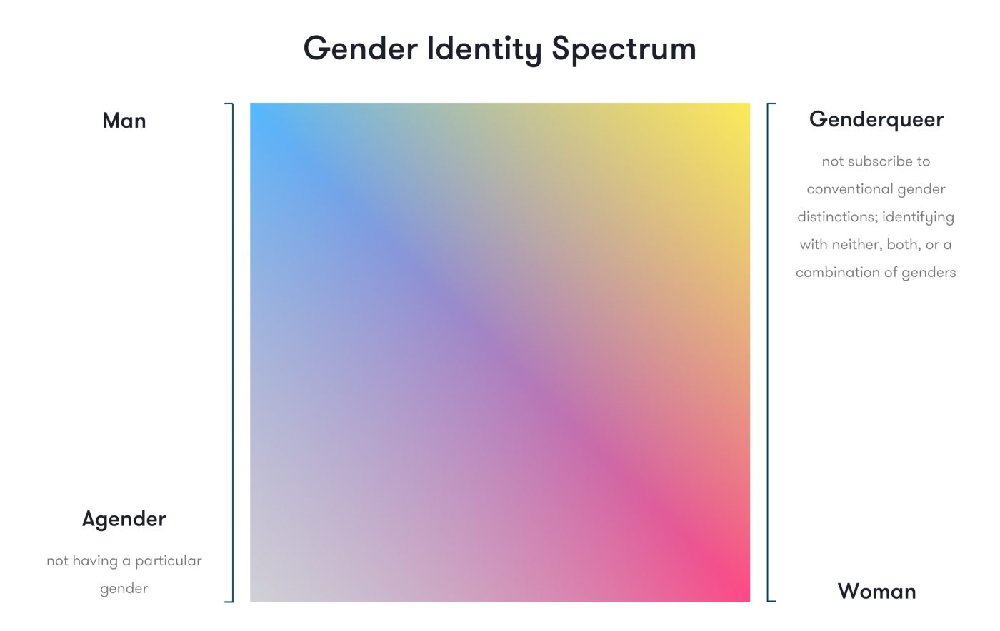

Explore the rest of our webpage!


Copyright © A.J. Ty and K.G. Gan. 9-Potassium
Hello and welcome to this website's page on Gender Identities! Unlike Sexual Orientation which deals with a person's attraction to other people, Gender Identity deals with someone's own internal feelings on what they are. Simply put, whereas Sexual Orientation deals with the external, Gender Identity deals with the internal. We hope this webpage can shed some light on those wih varying and different gender identities from your own, and that hopefully you can gain a basic understanding at the very least of the wide spectrum of gender identities that people can identify as.
People sometimes use "Sex" and "Gender" interchangeably, but they are actually two very different things. Sex is a biological term based on body parts and other biological factors, while Gender refers to our internal sense and understanding of ourselves. Not only that, but, unlike gender which lies on a "gender spectrum", sex is a biological term meaning that it isn't exactly on a spectrum. There are only about 3 sexes actually: Males who have male biological parts, Females who have female biological parts, and those who are considered Intersex meaning they have both male and female biological parts.
First of all, what is Gender Identity? Well, Gender Identity is our internal concept of our own gender. There are plenty of different gender identities on the gender spectrum, ranging from male to female to everything in between (non-binary). Below is a visual representation of the gender spectrum:
In this diagram, there are four main categories split into 4 corners: one representing masculine genders, one representing feminine genders, one representing agender, and one representing genderqueer. To better understand each gender, let's go over the main categories of gender: Male, Female, and Non-Binary.
Those who identify as male (whether they are cisgender or transgender) identify their gender identity as being of the sex "male" as well.
Those who identify as female (whether they are cisgender or transgender) identify their gender identity as being of the sex "female" as well.
"Non-binary" is an umbrella term for the genders that are somewhere between or beyond being male/female. Some gender identities under non-binary would be:
Agender
Someone who doesn't identify as a particular gender
Genderfluid
Someone whose gender can fluctuate between different different genders over time (for example, someone who is genderfluid may identify as a man one day, but identify as a woman the next)
There are, of course, even more gender identities other than these two which can fall under the "Non-binary" umbrella.
It is also important to note also, that since gender is on a spectrum, there are some genders that are between other genders. For example, someone who is genderfluid may actually be masculine genderfluid or feminine genderfluid. Simply put, someone's gender identity can be a range of hues and isn't confined to just one particular identity or range of identities.
To put it simply, someone who identifies as transgender is a person who identifies as a gender different from their assigned sex/gender. The two main groups of transgenders are those who are Transfem (Generally those assigned male at birth, but have realized that they more closely identify as female) and those who are Transmasc (Generally those assigned female at birth, but have realized they more closely identify as male).
The fight for the rights of those who don't identify as cisgender has been a very long and hard journey. In many ways, this particular fight is actually more divisive than those who are just non-heterosexual because gender identity pertains to the INTERNAL identity of one's gender whereas sexuality pertains to attraction to other people. Unfortunately, in many countries, they still don't recognize a person's self determined gender identity. In many countries as well, there are sometimes very restrictive laws to no laws at all protecting the absolutely deserved right for transgendered people to undergo surgery to change their gender if they wanted to. Despite all this however, the atmosphere and acceptance of those who don't identify as cisgender has absolutely improved from the past to the present day, but that isn't to say they don't still face discrimination from some less accepting people around them. Hopefully though, in the future, the acceptance of these people as well as their right to have their own self-determined gender identity be recognized by their motherlands can be achieved.
OHCHR. (n.d.). OHCHR | The struggle of trans and gender-diverse persons. Retrieved October 25, 2022, from https://www.ohchr.org/en/special-procedures/ie-sexual-orientation-and-gender-identity/struggle-trans-and-gender-diverse-persons
File:Gender identity spectrum.png - Wikimedia Commons. (2021, May 20). https://commons.wikimedia.org/wiki/File:Gender_identity_spectrum.png
Gender Identity Terms. (n.d.). Young Scot. https://young.scot/get-informed/national/gender-identity-terms
Bigender | Gender Wiki | Fandom. (n.d.). Gender Wiki. https://gender.fandom.com/wiki/Bigender
Copyright © A.J. Ty and K.G. Gan. 9-Potassium